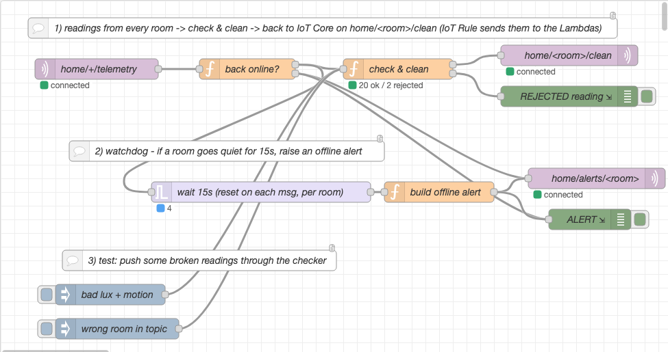
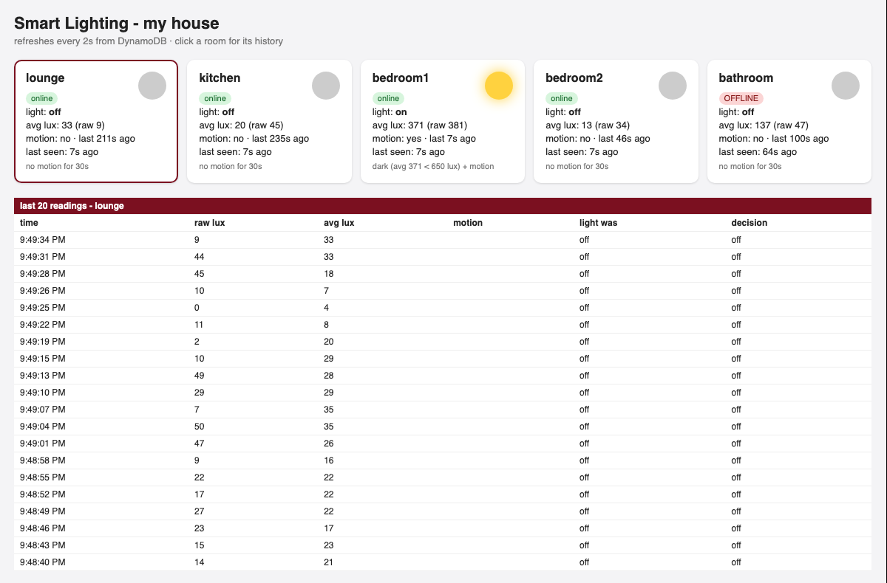

Smart Home Lighting System
Short version: the whole pipeline from my plan works end to end on real AWS. All 5 simulated rooms send readings to AWS IoT Core. Node-RED checks them and passes the good ones on. The two Lambda functions log the readings and decide on/off. The on/off command comes back down to the room, and the light actually switches. Everything gets saved in DynamoDB. The main thing I haven't done yet is the 100-room load test and collecting the CloudWatch graphs for it, which is the big part of the final report.
Here's how it compares to the build order I wrote in the plan:
| Plan item | Status | Notes |
|---|---|---|
| AWS account, repo, one device talking to IoT Core | Done | New AWS account, Sydney region. Repo is local git for now |
| Node.js simulator for all 5 rooms | Done | lounge, kitchen, bedroom1, bedroom2, bathroom – one process each |
| Node-RED flow to receive and check data | Done | Also added duplicate filtering + a dead-sensor watchdog |
| Two Lambda functions + DynamoDB table | Done | Had to fix the decision rule (section 4) |
| Device certificates + IAM permissions | Done | Tested that a device can't pretend to be another room |
| Load-test script, run it, CloudWatch evidence | Written | Not run yet – this is next |
| Small dashboard ("if there's time") | Done | Did it early, made debugging way easier |
| Final report | Not started | Waiting on load test results |
Below is an actual run with all 5 rooms going. I've cut it down to just the bathroom so it's readable. You can see the light come on as soon as there's motion in the dark. It stays on while someone's in there, then goes off 30 seconds after the last bit of motion (21:48:01 to 21:48:31). For this run I also told the bathroom sensor to "die" after 60 seconds to test the offline alert:
[21:47:43] bathroom lux= 20 motion=- light=off
[21:47:46] bathroom lux= 26 motion=Y light=off
[21:47:47] bathroom >>> light switched ON (dark (avg 15 < 250 lux) + motion) latency=405ms
[21:47:49] bathroom lux= 355 motion=Y light=on
[21:48:01] bathroom lux= 397 motion=Y light=on <- last motion
... 9 more readings, no motion, light stays on ...
[21:48:31] bathroom lux= 352 motion=- light=on
[21:48:32] bathroom >>> light switched OFF (no motion for 30s) latency=530ms
[21:48:37] bathroom lux= 47 motion=- light=off
[21:48:40] bathroom *** sensor died (stopped sending) ***
Node-RED, 12 seconds later:
4 Oct 21:48:52 - [info] [debug:ALERT]
{ roomId: 'bathroom', alert: 'offline', lastSeen: 1791110917730,
message: 'no data from bathroom for 15s - sensor probably dead' }

home/+/telemetry, get checked and cleaned, and the good ones go back to IoT Core on home/<room>/clean. (2) The watchdog raises an alert if a room goes quiet for 15s. (3) Two inject nodes push broken readings through the checker to test it. "20 ok / 2 rejected" = the two test messages got caught.The two test messages got rejected for the right reasons. The first one had negative lux and "yes" instead of true/false for motion. The second claimed to be the lounge but arrived on the kitchen's topic:
[debug:REJECTED reading] { room: 'lounge',
problems: [ 'lux missing/out of range', 'motion should be true/false', 'timestamp missing or more than 60s off' ] }
[debug:REJECTED reading] { room: 'kitchen',
problems: [ 'roomId does not match topic', 'timestamp missing or more than 60s off' ] }

home/<room>/clean, and one IoT Rule (SELECT * FROM 'home/+/clean') triggers both Lambdas at the same time. That way AWS is the one triggering the functions and handling the scaling, which is kind of the whole point.timestamp = 0 that holds its latest state (light on/off, lastSeen, when motion was last detected). The control function needs "when was the last motion" for the 30s delay, and the dashboard needs the current state. Reading one row is way cheaper than scanning the history every time.This was the big one. My plan's rule was "motion recently AND averaged light below a threshold (250 lux) → on, otherwise off". I made the simulator realistic, so when the bulb's on it adds about 350 lux to what the LDR sees. Which makes sense, the sensor's in the same room as the light. So on the first real run: dark room + motion → light ON → sensor now reads ~350 lux → "it's bright enough" → light OFF → dark again → ON... forever. Here's the lounge doing it:
[21:45:36] lounge >>> light switched ON (dark (avg 43 lux) + motion) latency=1780ms [21:45:38] lounge lux= 344 motion=- light=on [21:45:44] lounge >>> light switched OFF (bright enough (avg 356 lux)) latency=346ms [21:45:47] lounge lux= 0 motion=Y light=off [21:45:47] lounge >>> light switched ON (dark (avg 241 lux) + motion) latency=499ms ... and so on, every room, 61 switches in about a minute and a half
The fix was to use two thresholds instead of one (hysteresis). The light turns ON when it's below 250 lux. But once it's on, it only turns OFF for brightness if it goes above 650 lux, which is roughly the bulb (~350) plus real daylight. Turning off because nobody's there (30s with no motion) still works the same. After redeploying the control function, the next run had 10 switches over about 4 minutes, and every one of them was for a real reason (someone came in or left).
| Run | Rule | Light switches | Command latency (min / median / max) |
|---|---|---|---|
| Run 1 (~1.5 min) | single 250 lux threshold (from plan) | 61 (flickering) | 253 / 384 / 1811 ms |
| Run 2 (~4 min) | on < 250, off > 650 lux | 10 | 289 / 401 / 530 ms |
My first duplicate filter dropped any message whose sequence number wasn't higher than the last one from that room. That works fine until a device restarts. Its counter goes back to 1, so every reading from it got thrown away as a "duplicate". I only noticed because I'd restarted the simulator after the flicker fix and the REJECTED debug node went crazy. A real ESP32 rebooting would have hit exactly the same thing. I switched it to compare the device timestamp instead. A real QoS 1 duplicate has the exact same timestamp, so it still gets caught, but a rebooted device gets through fine.
Both functions get triggered by the same message, so they run in parallel. If I'd used PutItem in the log function, it could wipe out the decision the control function had just written to the same row (or the other way round). I'm using UpdateItem in both so they only touch their own fields. Also, the control function can't assume the current reading is in the table yet. So it averages the reading it was given plus the previous 2 from DynamoDB.
While setting up I checked the account settings and the concurrency limit is 10, not the 1000 you usually read about. Apparently new accounts start low. That's shared between both functions, so it's a real risk for the load test. Right now each invocation only takes ~30–70 ms (from the CloudWatch REPORT lines), so 10 might actually be enough. I'll find out when I run it. If it's not enough, IoT Core calls Lambda asynchronously and Lambda retries throttled events itself, so things should get delayed rather than lost. That's something I want to show properly in the final report.
Every room (and Node-RED) has its own certificate. The IoT policy uses the thing name as a variable, so a device can only connect with its own client ID and only publish to its own telemetry topic and subscribe to its own cmd topic. Each Lambda has its own IAM role with just what it needs. The log function can only UpdateItem on the one table. The control function can only Query/Get/Update that table and publish to home/*/cmd. I wrote a little test script to check the policy actually does something:
| Test (using the lounge's certificate) | Result |
|---|---|
Publish to its own topic home/lounge/telemetry | Accepted (control test) |
Publish to home/kitchen/telemetry (pretending to be the kitchen) | AWS closed the connection |
| Connect with client ID "kitchen" | AWS closed the connection |
| Connect with no client certificate at all | TLS handshake reset |
Risks / things I'm unsure about:
Things I'd like to ask my tutor: is it OK that Node-RED runs locally as the "edge" rather than in the cloud? And is showing the concurrency limit/throttling good enough for "demonstrably scalable", or should I request a higher limit first?
I used Claude (Anthropic's AI assistant, through Claude Code) for help with the coding, debugging (including the two bugs in section 4) and setting up the environment (AWS CLI, setup scripts, certificates, policies, Node-RED). It also helped me draft and structure this update. All the runs, logs and screenshots here are from the system actually running on my AWS account.